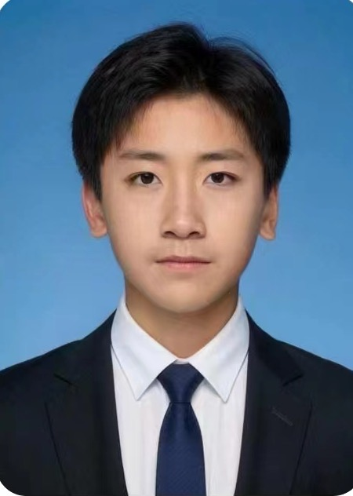

I am Xuanming Liu (刘轩铭), a student researcher focused on Generative AI and Efficient Multimodal Models. I am currently an intern at Sphere Lab, advised by Jinxiu Liu and Weiyang Liu.
My research centers on overcoming the efficiency-quality dilemma in generative AI. While modern generative models perform strongly in offline evaluation, their high inference cost still limits real-time interaction, mobile deployment, and long-form generation. I study how generative AI can remain both fast and light without giving up strong performance.
More specifically, I explore directions beyond simple compression, including dynamic compute allocation, essential optimization of the generation process, and joint training-inference co-design, with the goal of unlocking new possibilities for game simulation, real-time creation, and edge computing.
Sphere Lab(The Chinese University of Hong Kong) Hong Kong, China
Internship, Advised by Jinxiu Liu and Weiyang Liu July 2025 - Present
Nanjing Normal University Affiliated Middle School, Nanjing, Jiangsu, China
Full-time student
Sep 2021 - Jun 2024
ICLR 2026Streaming Autoregressive Video Generation via Diagonal Distillation
Xuanming Liu*, Jinxiu Liu*, Kangfu Mei, Yandong Wen, Ming-Hsuan Yang, Weiyang Liu
Accepted by ICLR 2026, top 10.75% submission according to Paper Copilot statistics. Alphabetical author order in paper.
Paper | OpenReview | Poster | Code
Summary: Diagonal Distillation is a streaming autoregressive video generation method that assigns more denoising steps to earlier segments and fewer to later ones, letting later segments inherit strong structural priors while greatly reducing total denoising cost. The method further aligns training and inference with diagonal forced training and uses flow distribution matching to preserve motion amplitude and temporal consistency under strict step budgets.
CVPR 2026SymbOmni: Evolving Agentic Omni Models via Symbolic Concept Learning
Jinxiu Liu*, Jianru Li*, Kuang Tanqing*, Xuanming Liu, Kangfu Mei, Yandong Wen, Weiyang Liu
CVPR 2026 under review, top 17% submission. Alphabetical author order in paper.
Summary: SymbOmni introduces a Symbolic Concept Box, an optimizable symbolic memory module that abstracts reusable workflow instructions from successful experiences. Through an induction-transformation loop and language-based backpropagation, the system evolves continuously without gradient fine-tuning, improving multimodal generation quality while reducing token use by more than 40%.
ICML 2026XYZFlow: Scaling Multidimensional Shortcut Flows for Efficient Generative Modeling
Xuanming Liu*, Jinxiu Liu*, Kangfu Mei, Yandong Wen, Weiyang Liu
ICML 2026 Under Review, (5(Accept), 4(Weak Accept), 4(Weak Accept), About 5% Submission)
Summary: XYZFlow replaces extensive model scaling with intensive scaling by imposing structured multidimensional constraints on probability flow. It injects complete denoising histories along time and spatial shortcut trajectories, using progressive denoising schedules to strengthen context and straighten generation paths for more efficient synthesis.
Streaming Autoregressive Video Generation via Diagonal Distillation
GitHub stars in resume: 126